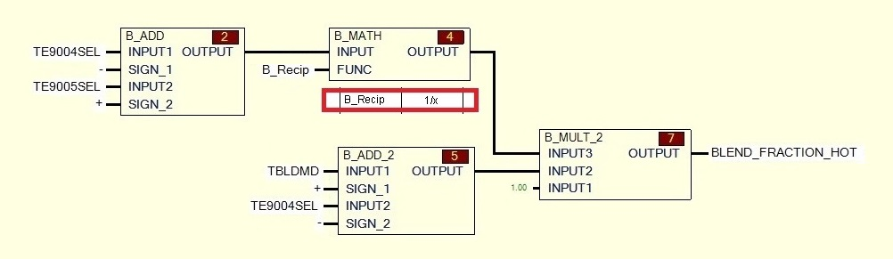
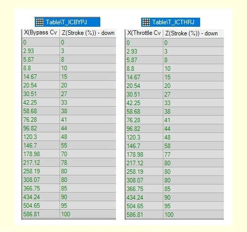

Se pretende encontrar una expresión para calcular el valor de apertura de las
válvulas FCV-9051 y FCV-9052, utilizando como variables de entrada T25, TE-9004
y TE-9005. Para el análisis, se considerarán estados ideales en los que no se
toman en cuenta los lazos de retroalimentación del proceso.
A continuación, se explicará la lógica en segmentos concisos para una
comprensión gradual de la expresión final. Se desglosarán los modelos
correspondientes a las siguientes variables:
- 5 - Conversión de tablas a función
2 - BLEND_FRACTION_HOT
En el siguiente diagrama de lógica:
- En el bloque 2 de suma:
Diferencia entre temperatura de salida y temperatura de entrada en el intercooler
(TE-9005SEL - TE-9004SEL)
- En el bloque 4 de función MATH:
Configurado en este caso como "función reciproca", "función inversa"
- En el bloque 5 de suma: Diferencia entre las variables
TBLDMD - TE-9004SEL
BLEND_F = [1 / (TE-9005SEL - TE-9004SEL)] * (TBLDMD - TE-9004SEL)

5 - Tablas
En este punto, los valores de ICBYPJ y ICTHRJ se convierten en BYPASS_DMD (FCV-9052)
y THROTTLE_DMD (FCV-9051) respectivamente mediante una función expresada en una tabla.
Teniendo en cuenta los valores de la tabla, se buscó una relación entre los valores
X e Y utilizando herramientas de Python, obteniendo los siguientes resultados:
- Función para FCV-9052 con una relación del 95% :
FCV-9052 = 0.36 * ICBYPJ – 0.0004 * ICBYPJ ^2 + 10.3
- Función para FCV-9051 con una relación del 96% :
FCV-9051 = 0.37 * ICTHRJ – 0.0004 * ICTHRJ ^2 + 10.2

Expresion Final
Finalmente, las expresiones para la demanda de las válvulas FCV-9051 y FCV-9052
quedarían relacionadas con las siguientes variables independientes:
- T25REF: Valor Fijo de 85 °F (29,4 °C)
FCV-9051 = 0.37 * ICTHRJ – 0.0004 * ICTHRJ ^2 + 10.2
FCV-9052 = 0.36 * ICBYPJ – 0.0004 * ICBYPJ ^2 + 10.3
Donde
ICBYPJ = [(BLEND_F - 1) * 833.33] / 4.22
ICTHRJ = (BLEND_F * 833.33) / 4.87
BLEND_F = (1 / (TE9005SEL – TE9004SEL)) * (T25REF – 5 – TE9004SEL)
Calculadora
Se ha introducido la fórmula en una calculadora, la cual permite ajustar los datos
de T25, TE-9004 y TE-9005. Para utilizar la calculadora, tener en cuenta los
siguientes datos históricos.
- T25: 85 °F (29.4 °C) Valor minimo - 103 °F (39.4 °C) Valor Maximo
FCV - 9051 [%] = 11
FCV - 9052 [%] = 11
SUMA = 11